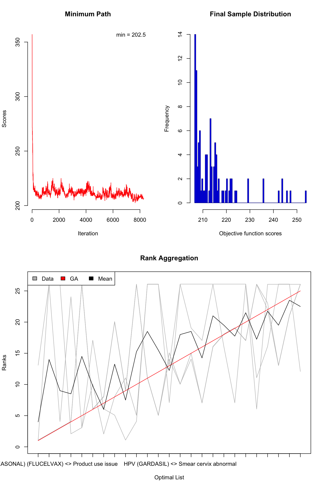

Load the detected signals from base signal rankers:
df_gps <- readRDS("data-processed/df_gps.rds")
df_prr <- readRDS("data-processed/df_prr.rds")
df_ror <- readRDS("data-processed/df_ror.rds")
df_bcpnn <- readRDS("data-processed/df_bcpnn.rds")
rownames(df_gps) <- paste(df_gps$var1, df_gps$var2, sep = " <> ")
rownames(df_prr) <- paste(df_prr$`drug code`, df_prr$`event effect`, sep = " <> ")
rownames(df_ror) <- paste(df_ror$`drug code`, df_ror$`event effect`, sep = " <> ")
rownames(df_bcpnn) <- paste(df_bcpnn$`drug code`, df_bcpnn$`event effect`, sep = " <> ")Only keep the commonly detected signals:
common_signals <- Reduce(intersect, list(rownames(df_gps), rownames(df_prr), rownames(df_ror), rownames(df_bcpnn)))
length(common_signals)
[1] 308Re-rank the detected signals in each method:
df_gps <- df_gps[common_signals, ]
df_prr <- df_prr[common_signals, ]
df_ror <- df_ror[common_signals, ]
df_bcpnn <- df_bcpnn[common_signals, ]
df_gps <- df_gps[order(df_gps$QUANT_05, decreasing = TRUE), ]
df_prr <- df_prr[order(df_prr$`LB95(log(PRR))`, decreasing = TRUE), ]
df_ror <- df_ror[order(df_ror$`LB95(log(ROR))`, decreasing = TRUE), ]
df_bcpnn <- df_bcpnn[order(df_bcpnn$`Q_0.025(log(IC))`, decreasing = TRUE), ]Transform the ranked lists into the matrix form:
ranks <- matrix(NA, nrow = 4, ncol = length(common_signals))
ranks[1, ] <- rownames(df_gps)
ranks[2, ] <- rownames(df_prr)
ranks[3, ] <- rownames(df_ror)
ranks[4, ] <- rownames(df_bcpnn)
colnames(ranks) <- 1:ncol(ranks)Perform rank aggregation (Pihur, Datta, and Datta 2007) to create an ensembled safety signal list using the Spearman footrule distance and genetic algorithm. To keep the problem size tractable, we only optimize and generate a the top-25 optimal list:
library("RankAggreg")
rankagg <- RankAggreg(
ranks, k = 25,
distance = "Spearman", method = "GA", maxIter = 10000,
seed = 2020, verbose = FALSE
)Check the rank-aggregated list:
plot(rankagg)
rankagg$top.list
[1] "INFLUENZA (SEASONAL) (FLUCELVAX) <> Product use issue"
[2] "INFLUENZA (SEASONAL) (AFLURIA) <> Multiple use of single-use product"
[3] "HPV (CERVARIX) <> Product use issue"
[4] "SMALLPOX (DRYVAX) <> Cow pox"
[5] "INFLUENZA (SEASONAL) (FLUBLOK QUADRIVALENT) <> Product administered to patient of inappropriate age"
[6] "SMALLPOX (ACAM2000) <> Pericardial disease"
[7] "ROTAVIRUS (ROTASHIELD) <> Gastrointestinal haemorrhage"
[8] "MENINGOCOCCAL CONJUGATE (MENVEO) <> Incorrect product formulation administered"
[9] "SMALLPOX (ACAM2000) <> Troponin I increased"
[10] "INFLUENZA (SEASONAL) (FLUCELVAX) <> Drug administered to patient of inappropriate age"
[11] "HPV (GARDASIL) <> Human papilloma virus test positive"
[12] "INFLUENZA (SEASONAL) (AFLURIA) <> HIV antigen negative"
[13] "SMALLPOX (ACAM2000) <> Troponin I"
[14] "HPV (GARDASIL) <> Smear cervix abnormal"
[15] "MENINGOCOCCAL CONJUGATE (MENVEO) <> Product reconstitution issue"
[16] "SMALLPOX (ACAM2000) <> Orthopoxvirus test positive"
[17] "HPV (GARDASIL) <> Cervical dysplasia"
[18] "LYME (LYMERIX) <> Borrelia burgdorferi serology positive"
[19] "LYME (LYMERIX) <> Infection parasitic"
[20] "HPV (GARDASIL) <> Colposcopy"
[21] "INFLUENZA (H1N1) (H1N1 (MONOVALENT) (MEDIMMUNE)) <> Contraindication to vaccination"
[22] "DTAP + IPV + HIB (PENTACEL) <> Post-tussive vomiting"
[23] "SMALLPOX (ACAM2000) <> Generalised vaccinia"
[24] "SMALLPOX (ACAM2000) <> Vaccinia virus infection"
[25] "SMALLPOX (ACAM2000) <> Echocardiogram normal" In the aggregated top-ranked vaccine-adverse event pairs, we find some commonly reported “adverse reactions” that are can be mostly attributed to human errors or logistical issues, such as:
Wrong product administered
Wrong technique in drug usage process
Drug administered to patient of inappropriate age
Product distribution issueThis indicates a possibility to improve the vaccine administration process for or to improve the product labeling for certain types of vaccines in the future.
Certain detected signals from individual lists also indicates some data quality issues. For example, “No adverse event” is not an actual adverse event, but was included in the VAERS database, and “Product use issue” is a term that is too generic to be meaningfully interpreted by the regulators. Such findings could be helpful in guiding the improvement of the upstream reporting data quality and the data ingestion procedures.
Pihur, Vasyl, Susmita Datta, and Somnath Datta. 2007. “Weighted Rank Aggregation of Cluster Validation Measures: A Monte Carlo Cross-Entropy Approach.” Bioinformatics 23 (13): 1607–15.
If you see mistakes or want to suggest changes, please create an issue on the source repository.